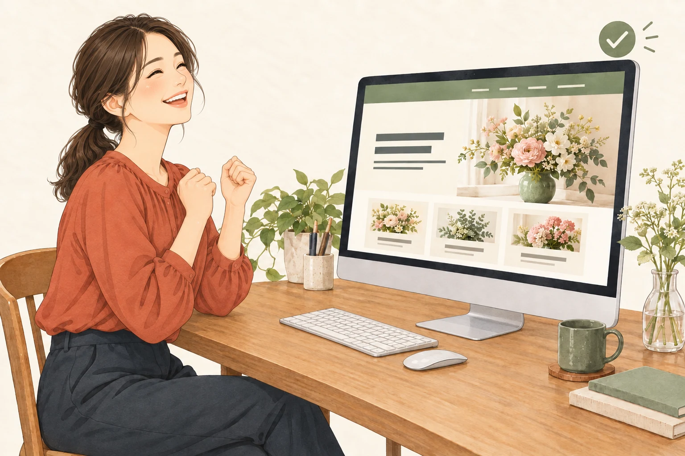

工程 01
レイアウトを完成させる
サンプルを選び、文章や画像を入れながら、公開したいページを形にします。
工程 02
データを送る
完成したレイアウトのZIPデータを、メールでアーチデザイン工房へ送ります。
工程 03
受付・振込案内を受け取る
内容を確認後、受領のご連絡とお振込先をメールでご案内します。
工程 04
入金する
ご案内した振込先へお支払いください。入金確認後、公開作業へ進みます。
工程 05
ホームページを公開
ご入金確認後3日以内に公開し、完成したURLをメールでお知らせします。
